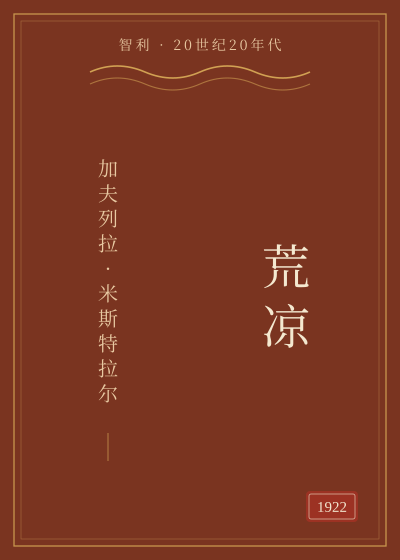
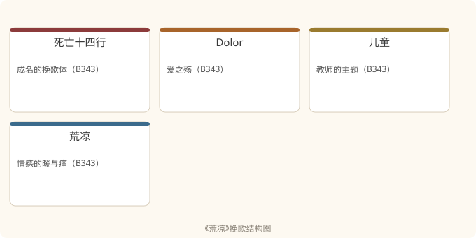

荒凉
一、基本信息
| 作者 | 加夫列拉·米斯特拉尔 |
|---|---|
| 成书/出版 | 1922年（Britannica B343：Desolación (1922)——早期作品集） Gabriela Mistral — Encyclopaedia Britannica（百科全书） |
| 国别/地区 | 智利 |
| 时代 | 现当代 · 20世纪20年代 |
| 体裁 | 诗集 |
| 语言 | 西班牙语 |

《荒凉》挽歌结构图（主题·结构图）
二、创作背景
Britannica（B343）：Desolación——'A collection of her early works'，含'Dolor'——'detailing the aftermath of a love affair that was ended by the suicide'。
Britannica（B343）：米斯特拉尔主题——'love of children and of the downtrodden remained her principal themes'；风格——'warmth of feeling and emotional power'。
Britannica（B343）：1914年以'Sonetos de la muerte'（死亡十四行诗）获智利奖而成名——本集收录其成名期作品。
三、内容脉络
死亡十四行诗：'Sonetos de la muerte'的挽歌体（B343：成名作——篇目收录通说待核）。
'Dolor'：因自杀而终结的爱恋及其余波（B343）。
教师之诗：对儿童与底层者的爱（B343）。
四、主要人物表
| 人物 | 身份 | 说明 |
|---|---|---|
| 抒情'我' | 教师/诗人 | （B343 教师出身的自传语境） |
五、主题与艺术特点
- 对孩子的爱（B343：love of children）。
- 对底层者的爱（B343：the downtrodden）。
- 死亡与哀悼（B343：'Sonetos de la muerte'/'Dolor' 语境）。
六、影响与评论
- Britannica：1945年诺奖——首位拉美得主（B343）。
Gabriela Mistral — Encyclopaedia Britannica（百科全书） - Britannica：英译者含 Langston Hughes、Ursula K. Le Guin（B343）。
Gabriela Mistral — Encyclopaedia Britannica（百科全书）
七、阅读建议
难点
- 西班牙语美洲诗歌的宗教语调。
- 智利北部乡村背景。
- 《荒凉》中译本（人民文学等——通说待核）。
- 西班牙文原版。
米斯特拉尔首选；后接《塔拉》(1938)。
八、待核实
- 'Dolor'篇目细节核对。
- 1922年出版（ Instituto de las Españas，纽约说）待核。
- '自杀'事件的传记细节待核（B343未载姓名）。
本页主要来源
相关作品：二十首情诗和一支绝望的歌地狱一季恶之花